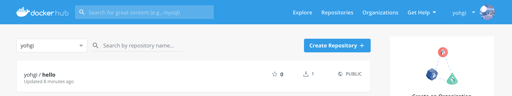

Dockerfile

Docker Image¶
Docker Image が特定の環境のスナップショットということがわかりました。
次にDocker Image を自分で作成する方法を見ていきましょう。
このドキュメントについて
Docker Image を作るための方法は複数ありますが、このドキュメントは 「プロダクションへDockerを導入するための知識をハンズオン形式で最短経路で学ぶ」 ということを目標にしています。
そのため、現在デファクトスタンダードである Dockerfile のみ取り扱います。
興味がある方は調べてみると良いですが、Dockerfile以外は基本的に使用されません。
Dockerfile¶
Docker Image は Dockerfile というファイルを記述し、そのファイルを元にビルドすることでスナップショットの作成ができます。
試しに Dockerfile を記述してDocker Image を作成してみましょう。
Dockerfileを記述してみる¶
まずは echo hello! を実行するDocker Image を作ってみましょう。
1. 環境の用意¶
ディレクトリを作成してviで Dockerfile へテキスト入力の開始をします。
$ cd ~
$ mkdir -p docker/ubuntu
$ cd docker/ubuntu
$ echo "hello docker !" > hello.txt
$ vi Dockerfile
2. Dockerfile の編集¶
Dockerfileは独自のDSLで記述します。
DSLは後ほど解説しますが、以下のDockerfileは「 ubuntu というDocker Imageをもとに、ホストの hello.txt をコンテナの /tmp/hello.txt へコピーして、 cat /tmp/hello.txt コマンドを実行」という意味になります。
3. Docker Image のビルド&実行¶
docker build コマンドで Dockerfile からDocker Image を作成します。
-t hello オプションは「Docker Imageを hello という名前にする」という意味です。
. はdocker build 実行時のコンテキストの指定です。 . は COPY コマンドを実行する際にどのディレクトリを起点とするかを指定します。
Docker Image がビルドできたか確認してみましょう。
docker images で現在ローカルに存在するDocker Image の一覧を確認することができます。
$ docker images
REPOSITORY TAG IMAGE ID CREATED SIZE
hello latest 59e1a587fe86 13 seconds ago 88.9MB
ubuntu latest 94e814e2efa8 6 days ago 88.9MB
node latest 9ff38e3a6d9d 10 days ago 904MB
docker run image で実行してみましょう。
CMD で指定した cat /tmp/hello.txt が実行され、"hello docker !"と表示されるはずです。
Docker Hub へアップロード¶
ローカルで開発したイメージをステージングや本番環境で動かすにはDockerレジストリにアップロードする必要があります。
DockerレジストリはDocker Image を保存するための場所で、Docker版のGitHubのようなものです。
Docker公式が提供しているDockerHubへ先ほど作成した hello イメージをアップロードしましょう。
クラウドの場合
AWSの場合"Elastic Container Registry"が、GCPの場合"Google Artifact Registry" というDockerレジストリサービスが存在します。
クラウド上に本番環境を構築する場合は構築するクラウドで提供されているDockerレジストリサービスを使うのが良いでしょう。
1. Docker Hubへログイン¶
docker login コマンドでDocker Hub へログインします。
まだDockerHubの登録が済んでいない場合は https://hub.docker.com/ にてアカウントの登録をしましょう。
2. Docker Image の命名¶
Docker Hub にアップロードするためにはDocker Hub のDocker Image の命名規則に則る必要があります。
ユーザーのオリジナルイメージは <USER NAME>/<IMAGE NAME>:<TAG> という命名にします。( :<TAG> は省略可能で、省略すると :latest と命名されます)
まずは docker tag コマンドで命名しましょう。 <USER NAME> は自分のユーザー名を入力してください。
命名できたかの確認をしましょう。
$ docker images
REPOSITORY TAG IMAGE ID CREATED SIZE
hello latest 59e1a587fe86 19 minutes ago 88.9MB
<USER NAME>/hello latest 59e1a587fe86 19 minutes ago 88.9MB
ubuntu latest 94e814e2efa8 6 days ago 88.9MB
3. Docker Imageのアップロード¶
Docker Image のアップロードを行います。
$ docker push <USER NAME>/hello
The push refers to repository [docker.io/<USER NAME>/hello]
b57c79f4a9f3: Mounted from library/ubuntu
d60e01b37e74: Mounted from library/ubuntu
e45cfbc98a50: Mounted from library/ubuntu
762d8e1a6054: Mounted from library/ubuntu
latest: digest: sha256:99aab145aaa0bf0e51a2ab995e0051b1756e1016cbc7d82bcee663c79f56b5c3 size: 1150
4. Docker Hub の確認¶

https://hub.docker.com/ へアクセスし、 <USER NAME>/hello がアップロードされているか確認しましょう。
5. Docker Hub にアップロードしたDocker Imageの実行¶
まずは現在存在するローカルのイメージを削除します。
同名のイメージが存在するとDockerHubから取得せず、ローカルに存在するイメージを参照してしまうからです。
実行中のコンテナを削除
$ docker container ls -a
CONTAINER ID IMAGE COMMAND CREATED STATUS PORTS NAMES
429c028bcf74 ubuntu "echo hoge" 16 seconds ago Exited (0) 15 seconds ago stoic_greider
$ docker container prune
WARNING! This will remove all stopped containers.
Are you sure you want to continue? [y/N] y
Deleted
ローカルのImageを削除
$ docker image prune -a
WARNING! This will remove all images without at least one container associated to them.
Are you sure you want to continue? [y/N] y
Deleted Images:
Docker Hub から作成したイメージの取得
$ docker pull <USER NAME>/hello
Using default tag: latest
latest: Pulling from <USER NAME>/hello
898c46f3b1a1: Pull complete
63366dfa0a50: Pull complete
041d4cd74a92: Pull complete
6e1bee0f8701: Pull complete
Digest: sha256:99aab145aaa0bf0e51a2ab995e0051b1756e1016cbc7d82bcee663c79f56b5c3
Status: Downloaded newer image for <USER NAME>/hello:latest
Dockerイメージの実行
DSL¶
コマンド¶
Dockerfileには17のコマンドが用意されています。
FROM , ENV , WORKDIR , RUN , ADD , ARGS , CMD , ONBUILD , LABEL , ENTRYPOINT ,
STOPSIGNAL , MAINTAINER , VOLUME , HEALTHCHECK , EXPOSE , USER , SHELL
MAINTAINERコマンド
MAINTAINER コマンドは非推奨です。
このコマンドが使用されているDockerfileは既に古くなっている可能性があるので注意しましょう。
基本的なコマンド¶
個人的に、Dockerfileを本番のワークロードで使用する場合以下の8つのコマンドを覚えるだけで十分だと考えています。
FROM , COPY , RUN , CMD , WORKDIR , ENV , USER , EXPOSE
Node.jsを動かす際のサンプルを用意したので、サンプルのDockerfileをもとに見ていきましょう。
実際のコードは以下を参照してください。
introduction-docker/handson/dockerfile at master · y-ohgi/introduction-docker
FROM node
ENV NODE_ENV=production
WORKDIR /scripts
COPY package* .
RUN <<EOF
npm install
groupadd app
useradd -g app -m app
mv /root/.config /home/app/ \
chown -R app:app /scripts /home/app/.config
EOF
COPY . .
RUN npm run build
USER app
EXPOSE 3000
CMD ["npm", "run", "start"]
FROM¶
ベースとなるDocker Image（ベースイメージ）を指定します。
Dockerはベースイメージの上に COPY や RUN のようなコマンドを重ねてイメージを完成させます。
また、ベースイメージはDocker HubやGoogle Cloudなどの信頼できるレジストリのイメージを使用するのが一般的です。
ENV¶
Docker内で使用する環境変数を定義します。
NODE_ENV のようなDockerの起動時にデフォルトで定義されていてほしい環境変数を定義すると良いでしょう。
WORKDIR¶
Dockerfileでコマンドを実行する際に基準となるディレクトリを設定します。
この際存在しないディレクトリを指定すると自動的にディレクトリが作成されます。
デフォルトだと多くのベースイメージで / に設定されているため、新たなディレクトリを作成すると良いでしょう。
COPY¶
Docker内へホストのファイル/ディレクトリをコピーします。
COPY は基本的に2つの引数を設定します。1つ目はホスト側のディレクトリ、2つ目はDocker側のディレクトリです。
ホスト側のディレクトリは docker build . で指定したディレクトリです。この場合 . を指定しており、カレントディレクトリが参照されます。
Docker側はデフォルトのパス、もしくは WORKDIR で定義されたディレクトリを参照します。
RUN¶
Docker内でコマンドを実行します。
ここでコンテナへ依存するライブラリ・パッケージのインストール・ユーザーの作成設定などの任意のコマンドを実行します。
USER¶
イメージを起動時に使用するユーザーを指定します。
デフォルトは root が設定されているため、セキュリティリスクを回避するために別のユーザーを指定するのが良いでしょう。
EXPOSE¶
コンテナ起動時に公開するポートを記述します。
EXPOSE を記載することで他の人から「このDockerはどのポートを使用するのか」がわかりやすくなるため、記述すると丁寧です。
CMD¶
Docker起動時にデフォルトで実行されるコマンドを定義します。
Dockerはここで設定したコマンドがフォアグラウンドで実行されている間が生存期間になります。
そのため、プロセスの処理が走っている間はフォアグラウンドで実行するように記述します(バックグラウンドで起動するとDockerが終了してしまいます)。
よく使用されるコマンド¶
プロダクションで使用することは少ないと思いますが、その他の頻出するコマンドを紹介します。
覚えておくと他の人のDockerfileを読む際に役立つでしょう。
VOLUME¶
Data Volumeを作成するためのコマンドです。Volumeについては後の章で説明します。
永続的なデータ・共有するためのデータ・更新頻度の激しいファイルを扱うために使用されます。
基本的に永続的なデータはDockerで管理することは推奨されないため、基本的にログのような更新頻度の激しいファイルで使用すると良いでしょう。
ARG¶
Dockerfileのビルド時に変数を使用するためのコマンドです。
例えば NODE_ENV を基本productionで、ローカル開発にdevelopmentにしたい場合の例です。
ADD¶
COPY コマンドを拡張したコマンドで、基本的に非推奨です。
主に以下の3つの機能を持ちます。
COPYと同じく指定したパスをコンテナ内へコピー- URLを指定した場合、そのURLからファイルをダウンロードし、コンテナ内へコピー
- コピーされたパスが
.tarもしくは.tar.gzの場合解凍する
ADD vs COPY
基本的に ADD を使うのは避け、 COPY を使うのが良いでしょう。
ADD は「指定したファイルのコピー」・「指定したURLの取得 」・「圧縮されたファイルの解凍」と非常に高機能な反面、Dockerfileの複雑度が増します。
また、URLからファイルを取得するのはパブリックへ依存が発生し、URLの参照先が変更された際にビルド不可なDockerfileができてしまいます。
COPY の場合機能がシンプルなのでシンプルなDockerfileの作成に繋がります。
ENTRYPOINT¶
指定されたコマンドを実行します。
CMDとは異なり、 docker run 時に指定したコマンドを ENTRYPOINT の引数として使用します。
引数に "hello" を渡すと echo "hello" が実行される
entrypoint は実行時のオプションで変更可能
ENTRYPOINT vs CMD
基本的に CMD を使うのが良いでしょう。
ENTRYPOINT はDocker起動時のコマンドを強制します。
コマンドのラップをするDocker Image の場合は ENTRYPOINT のほうが好ましいですが、一般的なWebアプリケーションの場合は CMD を使用する方がユーザーにとって使いやすいDocker Image になります。
まとめ¶
- Dockerfileを元にイメージを生成する。
- イメージははDockerレジストリへアップロードすることで容易に保管/配布ができる
- Dockerfileは基本的に8個のコマンドの組み合わせで作成できる